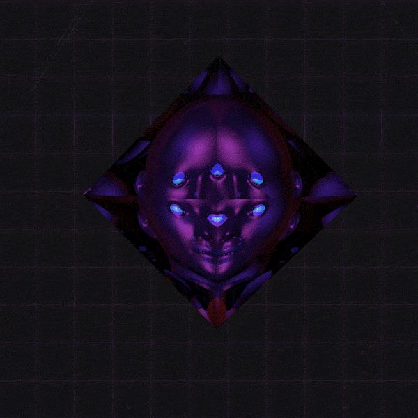
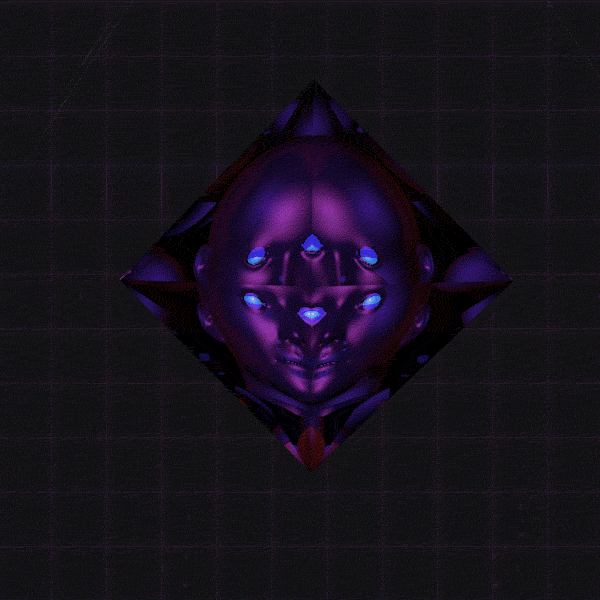
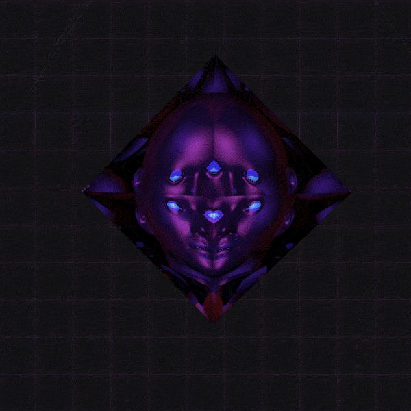
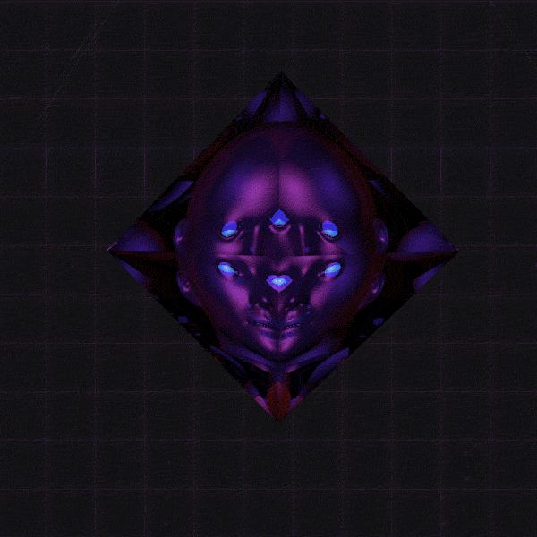

You reach near the end.
A hovering crystal with a face appears.
"I am Keeper of the Liminal Worlds.
Are you sure you want to go home, human?" The face asks.
You can't speak. You nod instead.
"It seems you have been through a lot. Though, your heart feels empty."
The voice continues, "I will let you home. You've survived Liminal Chaos.
However, with a heart of shame and a mind haunted with regret,
you can only live with so much meaning."
There is some silence.
"I wish you peace when time comes to take your life, human."
You fall.